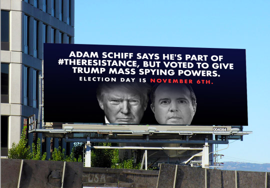
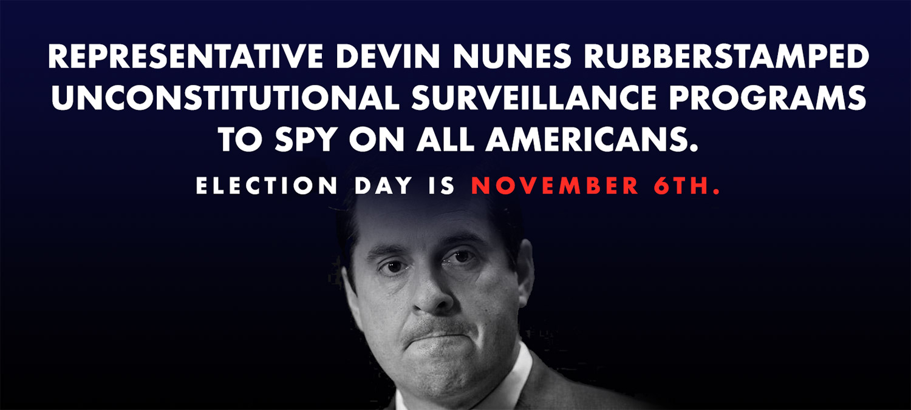

The Senate is less than 48 hours away from voting to extend the Foreign Intelligence Surveillance Act (FISA) with no warrant requirements to spy on Americans, but just 41 senators can stop this from happening. In the age of federal misconduct, every member of Congress must move right now to stop the government's abuse of the Internet to monitor everyone; they must safeguard our freedom and the US Constitution.
We have less than 48 hours to tell our lawmakers: "You can stand up to authoritarian abuses of power right now. Be one of 41 senators needed to stop S. 139, vote no on the extension of FBI, NSA, and Trump’s spying of all Americans without a warrant. Your constituents need you to safeguard their rights now more than ever. If you don't, you don't deserve to be in the Senate. Senators responsible for legalizing the US government's wiretapping of all our online communications will get a billboard rolled out in key districts during their election campaign."
We are a nonpartisan coalition of civil rights advocacy groups and Internet users, and we're crowdfunding pre-election billboards in the Congressional districts of any politicans who support warrantless mass surveillance of Americans. We have a chat bot so Internet users can send letters to their lawmakers and are also building a text list to inform voters of their lawmakers' vote on FISA before the next election. Text FREEDOM to 384387 to participate.
 
Call your senators! Don't let them sneak this one through. If just a few Democratic senators change their mind, the FISA Amendments Reauthorization Act will lose its filibuster-proof majority and Senators Ron Wyden (D-OR) and Rand Paul (R-KY) will filibuster the bill, demanding stronger privacy protections for American citizens.
FISA was originally passed in the wake of the September 11 attacks to allow the military to spy on the communications of foreign terrorists. Since then, whistleblowers like Edward Snowden and Judicial Watch have revealed that the executive branch has abused FISA with numerous exceptions, carve-outs, and "creative interpretations," allowing agencies like the FBI, NSA, and the president to spy on American citizens without a warrant.
Ironically, the vote hinges on Democratic lawmakers. After more than a year of relentlessly calling Donald Trump a fascist, an authoritarian, and even comparing him to Adolph Hitler, Democrats are on the verge of giving Trump six more years of unrestricted mass surveillance authority. Meanwhile, Republicans have alleged that President Obama abused FISA to improperly spy on the Trump campaign with no civilian oversight. Democrat or Republican, no president should have this authority.
Done calling? Help drive more calls!